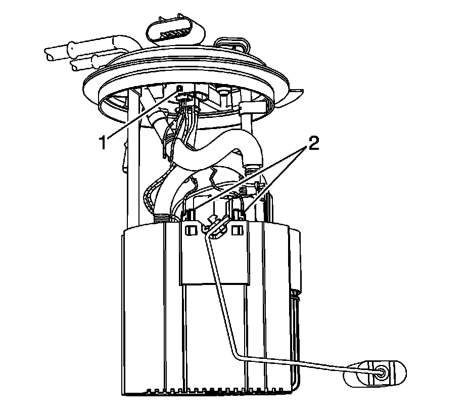
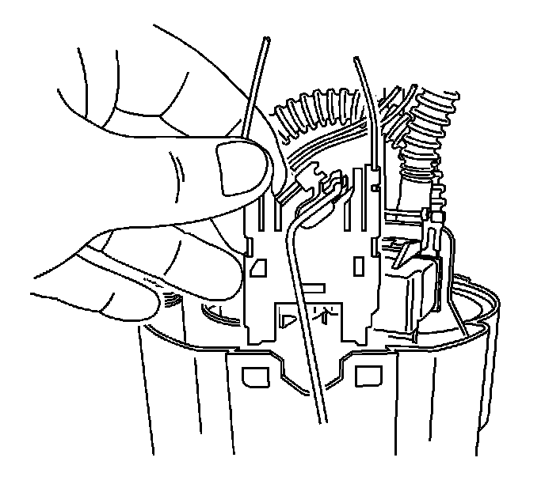
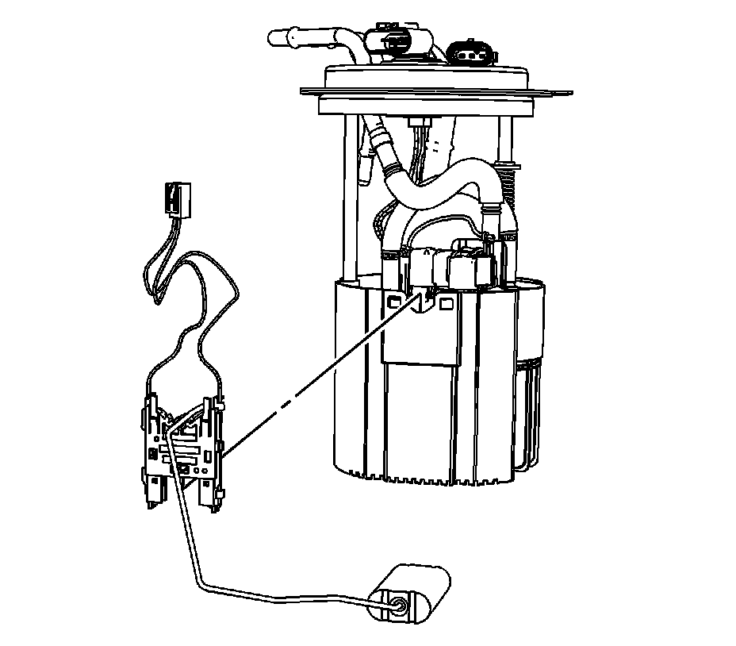

Fuel Level Sensor Replacement (1500 Series)
FUEL LEVEL SENSOR REPLACEMENT (1500 SERIES)
REMOVAL PROCEDURE

1. Remove the fuel tank module.
2. Using a small pick like tool, push in the retainer (1) in order to disengage the electrical connector.
3. Remove the fuel level sensor electrical connector from the module cover.
4. Push the level sensor locking tangs (2) in towards the inside of the module bucket.

5. Slide the fuel level sensor up.

6. Remove the fuel level sensor from the module.
INSTALLATION PROCEDURE
1. Install the fuel level sensor to the module.
2. Position and slide the fuel level sensor down.
3. Ensure that the level sensor tangs (2) are engaged at the bucket.
4. Install the fuel level sensor electrical connector to the module cover.
5. Ensure that the retainer (1) engaged the module cover.
6. Install the fuel tank module.